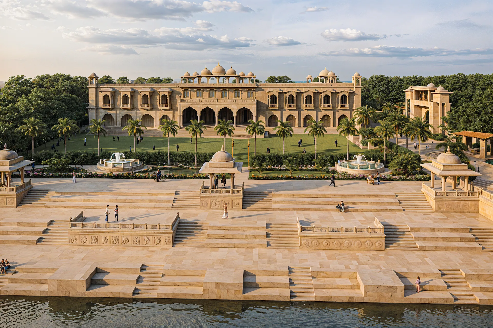

A pilgrimage town has to work on two very different days. On an ordinary weekday it is a quiet place of temples, lanes and river steps. On a festival day it can hold more people than a large city. Good planning has to serve both.
India's pilgrimage places are growing fast. New roads, rail links and airports bring more visitors, and that growth puts pressure on narrow lanes, old ghats, water, sanitation and the character that draws people in the first place.
This guide looks at pilgrimage destination master planning from an architect's point of view: crowds and festival peaks, approach routes and queues, ghats and river edges, water and sanitation, parking, places to stay, heritage, accessibility, public schemes and phasing. We have not master-planned a whole pilgrimage town. Our work in this space is private hospitality inside sacred settings, including the Sangam Pooja Wellness Resort on the Ganga in Prayagraj and a boutique hotel in Vrindavan. This post covers the principles, and how private projects and public infrastructure can fit together.
Why Pilgrimage Towns Need Their Own Kind of Plan
A pilgrimage town has to plan for visitors who arrive in waves, often at the same hour, to reach the same few places. A 2025 report by KPMG in India and PHDCCI cites religious tourism visits rising from 105 million in 2020 to 1,439 million in 2022. It cites annual footfall of 28.6 million at Kashi Vishwanath, 25.5 million at Tirupati and 135.5 million at the Ram Mandir in Ayodhya in 2024.
Several things set these places apart:
- Sharp peaks. Festivals, eclipses, auspicious bathing dates and weekends bring crowds many times the normal level, sometimes for a single morning.
- Fixed destinations. Everyone wants the same shrine, the same ghat or the same darshan. Demand cannot be spread to another location.
- Ritual movement. People walk in procession, circle shrines, bathe and wait.
- Living heritage. The old core is usually the reason people come. It is also the part least able to take more load.
Plan for the Peak Day and the Ordinary Day
The hardest question is how big to build. Design for the biggest festival and the town spends most of the year with empty car parks. Design for an average day and the peak becomes dangerous.
The usual answer is to build a permanent base for normal and busy days, then add temporary capacity for peak events. The Kumbh Mela in Prayagraj shows this at scale. The official Maha Kumbh portal lists more than 1,22,000 toilets, more than 84 parking areas, 54 holding areas, 524 shuttle buses and a total footfall of 66.3 crore as of 26 February 2025. Most of that is built for the event and removed afterwards.
A smaller town needs the same thinking at a smaller scale:
| Day type | What it needs | Typical approach |
|---|---|---|
| Ordinary day | Comfortable streets, clean ghats, shade, toilets, local transport | Permanent infrastructure, well maintained |
| Weekend or monthly festival | More parking, queue management, extra cleaning and medical cover | Permanent base plus flexible spaces such as plazas and grounds that switch use |
| Major annual festival | Holding areas, one-way routes, temporary toilets and water points, shuttle buses | Pre-planned temporary layer on reserved land |
| Once-in-years mega event | A temporary city: camps, roads, power, sanitation, policing | Event master plan with its own authority and budget |
The key is to reserve land and service connections for the temporary layer in advance. Open grounds and riverbank flats can serve as overflow space if water, power and drainage points are built in from the start.
Approach Routes, Queues and Holding Areas
Crowd accidents tend to happen on approaches: stairways, lanes, bridges and gates where too many people meet in too little space. In July 2025, a stampede on a narrow stairway to the Mansa Devi temple in Haridwar killed nine devotees and injured 29, as ThePrint reported. The state then directed its tourism department to prepare a master plan for religious places covering crowd control, carrying capacity, separate entry and exit routes, emergency evacuation, extra waiting space, drinking water, toilets, first aid and parking.
For any approach route, that translates into a few design moves:
- Know the carrying capacity. Work out how many people each lane, stair, bridge and courtyard can hold safely, and plan entry controls around the narrowest point.
- Separate the in and out. One-way loops keep people from colliding in tight spaces. Where a lane cannot be widened, a parallel return route may be needed.
- Give queues somewhere to wait. Holding areas with shade, seating, water and toilets let people wait in comfort away from the shrine.
- Remove pinch points. Steps without landings, sudden turns, low gates and encroaching stalls slow flow and build pressure. Clearing encroachments is often the cheapest fix.
- Support with technology. The KPMG report points to virtual queue systems at Sabarimala, RFID systems at Tirupati and app-based planning at Kashi Vishwanath. These work best when the physical route is already sound.
Ghats and River Edges
In many pilgrimage towns the river is the heart of the place. Ghats are where people bathe, pray, sit, watch the aarti and cremate their dead. They are hard to design because water levels change with the season, steps get slippery and crowds press towards the edge. For private resorts on the water, see our guide to waterfront resort architecture.

Good ghat design usually includes:
- Steps for every water level. Broad landings at intervals so bathing works in the dry season and the monsoon.
- Safe bathing zones. Marked areas with railings, chains or barriers at the deep edge, plus space for lifeguards and boats.
- Non-slip, durable stone. Textured sandstone or granite treads that stay safe when wet and can be scrubbed clean.
- Shade and places to sit. Chhatris, pavilions and trees give shade and act as gathering points for ritual and rest.
At the Sangam Pooja Wellness Resort, our master plan for a 2.5-acre estate on the Ganga includes public ghats in sandstone with carved chhatris. They create a ceremonial link between the buildings and the water. A riverbank site analysis came before any structure was placed, and the villas step down towards the water along the natural slope.
Water, Sanitation and Waste
Sanitation is the most common complaint in pilgrimage towns, and the KPMG report lists inadequate sanitation among the main gaps it found. Sacred rivers and tanks also suffer when sewage and waste from a growing town reach them.
- Toilets in the right places. Along approach routes, near queue holding areas, at ghats and at parking. Include women's and accessible toilets.
- Sewage kept away from the river. Interceptor drains, treatment plants and treated water reuse for landscape and flushing.
- Waste from offerings. Flowers, leaves, coconut shells and plastic pile up quickly near temples and ghats. Separate collection for floral waste allows composting or reuse.
- Peak-day capacity. Temporary toilet blocks need pre-laid connections or tanker access and space for desludging vehicles.
A hotel or resort in a pilgrimage town should treat its own sewage, keep runoff out of the river and manage its waste. Approvals usually require this anyway, and it protects the setting the property depends on.
Parking and Last-Mile Movement
Old pilgrimage cores were built for walking. Cars and buses push into lanes that cannot take them.
- Park at the edge. Large car and bus parks on the outskirts, linked to main roads, keep vehicles out of the core.
- Shuttle to the centre. Electric buses, e-rickshaws and battery carts carry people from parking to drop-off points near the shrine.
- Walk the last stretch. A pedestrian zone around the main shrine and ghats, with vehicle access only for emergencies, servicing and people who need assistance.
Hotels near the core must plan arrival with care. A drop-off that blocks a pilgrim lane causes friction, and valet parking at an outer car park can work better than on-site parking.
Accommodation: Dharamshalas, Hotels and Homestays
Pilgrims are not one market. Some come for a day, some stay in ashrams for weeks, families want a good mid-scale hotel, and others look for a quiet, high-end stay near the river.
| Stay type | Who uses it | Planning notes |
|---|---|---|
| Dharamshalas and ashrams | Pilgrims on a budget, long-stay devotees | Often run by trusts or communities, close to shrines, simple rooms and dormitories |
| Homestays | Families, repeat visitors | Spread income through the town, need clear rules on safety and sanitation |
| Mid-scale hotels | Families, groups, business travellers | Best near transport and parking, with easy access to the core |
| Boutique and heritage hotels | Visitors seeking character and comfort | Often in converted old buildings or small sites near the core |
| Resorts and wellness retreats | Longer stays, weddings, rituals, wellness | Need larger sites, usually at the edge of town or along the river |
Budget beds close to the shrine stop people sleeping in streets on peak days. Larger hotels and resorts fit better at the edge, with room for parking, services and landscape. Our guide to hotel master planning in India covers space programmes, back-of-house and phasing, and a hotel feasibility study helps test whether a site can support the demand.

Small hotels like our Vrindavan project bring comfort without bulk and can sit within an existing street. Our guide to boutique hotel architecture covers how such projects come together.
Protecting Sacred Character and Heritage
Grow too fast and a pilgrimage town starts to look like anywhere else. Glass fronts, hoardings and concrete blocks crowd out old temples, havelis and ghats, and the town loses what makes it special.
- Protect views of the shrine. Height limits and view corridors so new buildings do not block or dwarf temple spires and ghats.
- Use local materials and forms. Stone, lime, carved brackets, jharokhas and courtyards help new buildings sit with old ones.
- Reuse old buildings. Havelis and old dharamshalas can become guest houses, museums or community spaces. Our page on heritage hotel architecture looks at this kind of conversion.
- Respect ritual uses. Cremation ghats, procession routes and gathering grounds need protection, even where they look like spare land.
At Sangam Pooja, the design reinterprets royal Indian architecture in a contemporary way. The interiors draw on Indo-Islamic craft, with carved jali headboards, marble with inlay, carved wood, brass and lime plaster, as shown on the resort's interiors page. The aim is a building that belongs on the Ganga bank.
Designing for Elderly and Disabled Pilgrims
Many pilgrims are elderly, and some use wheelchairs or need help on stairs. A town that only works for the young and fit fails a large share of its visitors.
- Step-free routes. Ramps alongside steps at ghats and temples, gentle gradients and level resting points.
- Seating and shade everywhere. Benches every short distance on approach routes and in queue areas.
- Assisted transport. Battery carts and wheelchairs available at parking and drop-off points.
- Priority queues. A separate line or time slot for the elderly and disabled, with seating.
Access and a sacred setting can coexist. The Kashi Vishwanath Dham, according to a New India Samachar feature published by PIB, includes ramps and escalators for the elderly and Divyang.
What Recent Corridor Projects Show
India's recent temple corridors reshape the area around a major shrine, with more space for pilgrims, better links to the river and better facilities.
Kashi Vishwanath Dham, Varanasi
According to the same New India Samachar feature, the temple area grew from about 3,000 square feet to about 5 lakh square feet, with capacity for 50,000 to 75,000 devotees. The temple is now directly connected to the Ganga, with three yatri facilitation centres for rest and luggage, a bhogshala that seats 150, a control room with cameras and four large gates.
Mahakal Lok, Ujjain
The Tribune reported that the first phase of the Rs 856-crore Mahakaleshwar temple corridor project was inaugurated in October 2022. The corridor is over 900 metres long, skirts the revived Rudrasagar lake and includes two gateways, 108 sandstone pillars and more than 50 murals from the Shiv Puran.
Both show that space around the shrine gives room for queues and ceremony, and that facilities such as luggage rooms and medical care belong in the brief. Large clearances also change the old fabric, so each town has to decide how much of its lanes it is willing to alter.
Public Schemes: PRASHAD and Others
Much pilgrimage infrastructure in India is publicly funded. The main central scheme is PRASHAD (Pilgrimage Rejuvenation and Spiritual, Heritage Augmentation Drive), run by the Ministry of Tourism and launched in January 2015. Per a PTI report on ThePrint of a Lok Sabha reply in December 2025, 54 projects had been sanctioned across 28 states and union territories at an estimated cost of Rs 1,726.74 crore, and 32 were physically complete. Its stated focus covers livelihoods, skills, cleanliness, security, accessibility and service delivery.
For private developers, these schemes shape the town around a site. A new ghat, road or car park can change how guests reach a hotel, so find out what is planned near your land before fixing a design.
Where Private Hospitality Fits
Public bodies plan the shrine area, roads, ghats and services. Private owners build most of the hotels, resorts and banquet venues. A hotel that ignores the town's movement will struggle, and a town without good places to stay loses visitors to day trips.

From our work in Prayagraj and Vrindavan, a few principles stand out:
- Read the town before the site. Map festival routes, bathing points, crowd days and road closures. A banquet lawn that hosts weddings on a festival day needs a way in that avoids the pilgrim crowd.
- Give something back to the public realm. At Sangam Pooja, the public ghats extend the project to the river and add to the bathing edge.
- Keep guest and pilgrim flows apart where needed. A clear arrival court, service access from the rear and a separate route for events reduce friction with the town.
- Plan for the peak. Hotels in pilgrimage towns fill at festivals. Back-of-house, kitchens, water storage and power backup should handle full occupancy plus events.
Costs depend on the hotel segment. Our guide on how to design a resort in India gives cost-per-key ranges, which run from ₹35–60 lakh for mid-scale to ₹1.5–3.5 crore for luxury and boutique, excluding land.
Phasing the Plan
Few towns can do everything at once. A phased plan fixes the urgent problems first and adds capacity as demand grows.
| Phase | Focus | Examples |
|---|---|---|
| 1. Safety and basics | Remove dangers, fix sanitation | Clear encroachments, widen pinch points, add toilets and water, separate entry and exit |
| 2. Movement | Get vehicles out of the core | Edge parking, shuttles, pedestrian zone, bus bays |
| 3. Public realm | Make the core comfortable and beautiful | Ghats, shaded streets, plazas, lighting, signage, heritage repair |
| 4. Stay and services | Grow quality accommodation | Hotels, resorts, homestay rules, facilitation centres |
| 5. Peak layer | Prepare for the biggest days | Reserved grounds with services, holding areas, temporary camp sites |
Frequently Asked Questions
What is pilgrimage destination master planning?
It is the planning of a pilgrimage town or site as a whole, covering crowd movement, queues, ghats, water and sanitation, parking, accommodation, heritage and accessibility, with permanent infrastructure for ordinary days and temporary capacity for festival peaks.
How do pilgrimage towns handle festival crowds?
Through a mix of design and management: carrying capacity limits, separate entry and exit routes, holding areas with shade and water, parking at the edge with shuttles, temporary toilets and camps on reserved land, and control rooms with cameras. The Kumbh Mela goes further and builds a temporary city.
What is the PRASHAD scheme?
PRASHAD stands for Pilgrimage Rejuvenation and Spiritual, Heritage Augmentation Drive. It is a Ministry of Tourism scheme launched in January 2015 that funds tourism infrastructure at pilgrimage destinations, carried out through state governments and union territories. A Lok Sabha reply reported in December 2025 put sanctioned projects at 54 across 28 states and union territories.
Where should hotels go in a pilgrimage town?
Budget beds and dharamshalas work best close to the shrine. Mid-scale hotels suit sites near transport and parking. Larger hotels and resorts fit at the edge of town or along the river. Small boutique hotels can sit within the old core if access is planned carefully.
How can a pilgrimage site be made accessible for elderly visitors?
Provide ramps beside steps, gentle gradients, frequent seating and shade, battery carts and wheelchairs at drop-off points, accessible toilets, priority queues and large, clear signs. Kashi Vishwanath Dham, for example, has ramps and escalators for the elderly and disabled.
Planning for Faith and Growth
A pilgrimage town works when a first-time elderly visitor can arrive, find a toilet, wait in the shade, bathe safely, reach the shrine and leave without fear, and when the town still feels sacred at the end of the day. That takes public planning for crowds, routes, water and heritage, and private projects that respect and support it.
If you are planning a hotel, resort or wellness retreat in a pilgrimage town or along a sacred river, talk to our studio about how to fit it into the place.